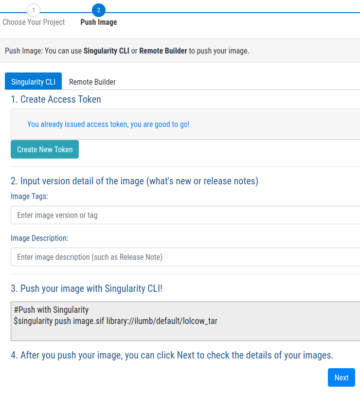
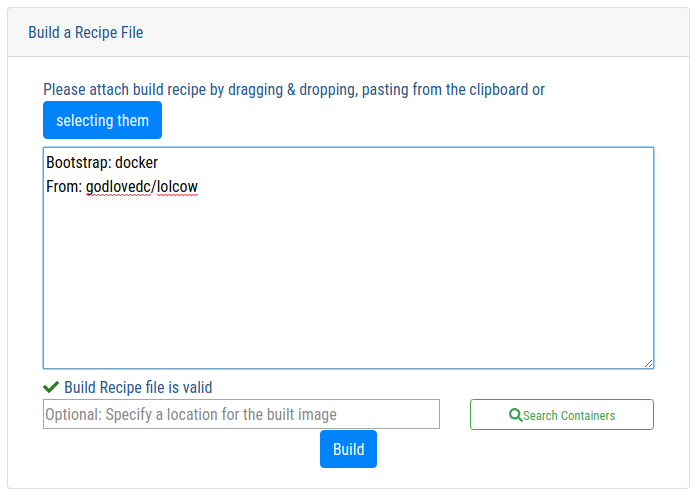
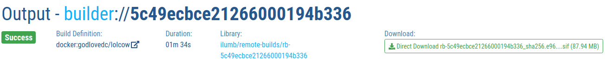
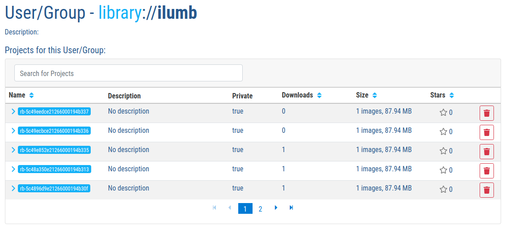

支持Docker和OCI容器¶
概述¶
Docker 容器镜像通常包含一个多个压缩的层，外加一些元数据。
通常使用 Dockerfiles 来build Docker容器镜像。
Docker有公共的 Docker Hub 和各种各样私有的registries来保存容器镜像。
Singularity设计的时候强调和Docker的交互性， 所以这一章节也首先要描述Singularity和Docker的交互：
Singularity的操作命令可以直接使用公共Docker镜像仓库上的的公共镜像。
Singularity可以技能Docker镜像转换为Singularity Image Format (SIF)。
Singularity的操作命令可以直接使用公共Docker镜像仓库上的的私有镜像。
Singularity的操作命令可以直接使用私有Docker镜像仓库上的的私有镜像。
Singularity的Definition文件中可以使用Docker镜像作为基础容器。
这一章节的第二部分描述Singularity和 Open Containers Initiative (OCI)的交互：
支持OCI格式的镜像
支持缓存OCI镜像
支持获取OCI镜像
Singularity的Definition文件中可以使用OCI镜像作为基础容器。
这一章节的最后，简单的总结了最佳使用和常见故障的解决方法。
操作Docker Hub上的公共镜像¶
godlovedc/lolcow 是 Docker Hub 的一个公共镜像， Singularity可以操作这个镜像:
$ singularity run docker://godlovedc/lolcow
INFO: Converting OCI blobs to SIF format
INFO: Starting build...
Getting image source signatures
Copying blob sha256:9fb6c798fa41e509b58bccc5c29654c3ff4648b608f5daa67c1aab6a7d02c118
45.33 MiB / 45.33 MiB [====================================================] 1s
Copying blob sha256:3b61febd4aefe982e0cb9c696d415137384d1a01052b50a85aae46439e15e49a
848 B / 848 B [============================================================] 0s
Copying blob sha256:9d99b9777eb02b8943c0e72d7a7baec5c782f8fd976825c9d3fb48b3101aacc2
621 B / 621 B [============================================================] 0s
Copying blob sha256:d010c8cf75d7eb5d2504d5ffa0d19696e8d745a457dd8d28ec6dd41d3763617e
853 B / 853 B [============================================================] 0s
Copying blob sha256:7fac07fb303e0589b9c23e6f49d5dc1ff9d6f3c8c88cabe768b430bdb47f03a9
169 B / 169 B [============================================================] 0s
Copying blob sha256:8e860504ff1ee5dc7953672d128ce1e4aa4d8e3716eb39fe710b849c64b20945
53.75 MiB / 53.75 MiB [====================================================] 2s
Copying config sha256:73d5b1025fbfa138f2cacf45bbf3f61f7de891559fa25b28ab365c7d9c3cbd82
3.33 KiB / 3.33 KiB [======================================================] 0s
Writing manifest to image destination
Storing signatures
INFO: Creating SIF file...
INFO: Build complete: /home/vagrant/.singularity/cache/oci-tmp/a692b57abc43035b197b10390ea2c12855d21649f2ea2cc28094d18b93360eeb/lolcow_latest.sif
INFO: Image cached as SIF at /home/vagrant/.singularity/cache/oci-tmp/a692b57abc43035b197b10390ea2c12855d21649f2ea2cc28094d18b93360eeb/lolcow_latest.sif
___________________________________
/ Repartee is something we think of \
| twenty-four hours too late. |
| |
\ -- Mark Twain /
-----------------------------------
\ ^__^
\ (oo)\_______
(__)\ )\/\
||----w |
|| ||
URL前面的 docker 用来告诉 run 命令从这个URL顺序的下载Docker镜像 各个 OCI blobs,
然后将它转换成一个SIF文件。转换后的SIF文件缓存在本地的 $HOME/.singularity/cache/oci-tmp/<org.opencontainers.image.ref.name>/lolcow_latest.sif,
其中 <org.opencontainers.image.ref.name> 是一个blob的哈希值。下次使用 run 运行同一Docker镜像的时候，不需要重新下载。
$ singularity run docker://godlovedc/lolcow
_________________________________________
/ Soap and education are not as sudden as \
| a massacre, but they are more deadly in |
| the long run. |
| |
\ -- Mark Twain /
-----------------------------------------
\ ^__^
\ (oo)\_______
(__)\ )\/\
||----w |
|| ||
Note
更多关于镜像缓存的内容请参考 这里.
Note
默认情况下使用 $HOME/.singularity/cache 目录缓存容器，如果想将容器缓存到其它地方，使用环境变量 SINGULARITY_CACHEDIR 控制。
由于容器被缓存成一个SIF文件文件，因此你可以直接到目录下运行容器。
cd /home/vagrant/.singularity/cache/oci-tmp/a692b57abc43035b197b10390ea2c12855d21649f2ea2cc28094d18b93360eeb/
接着执行这个SIF文件:
./lolcow_latest.sif
_______________________________________
/ The secret source of humor is not joy \
| but sorrow; there is no humor in |
| Heaven. |
| |
\ -- Mark Twain /
---------------------------------------
\ ^__^
\ (oo)\_______
(__)\ )\/\
||----w |
|| ||
Note
一个SIF文件可以直接执行。
使用 run 运行容器的时候 fortune | cowsay | lolcat 命令被执行。
使用 exec 命令可以执行要运行的命令比如:
$ singularity exec docker://godlovedc/lolcow fortune
Don't go around saying the world owes you a living. The world owes you
nothing. It was here first.
-- Mark Twain
Note
exec 使用了同样的缓存， 下面的 shell 也使用了同样的缓存。
Note
关于exec的更多内容，请查看 Directing Execution 和 Container Metadata.
除了非交互式的执行, Singularity也提供了交互式的 shell 命令:
$ singularity shell docker://godlovedc/lolcow
Singularity lolcow_latest.sif:~> cat /etc/os-release
NAME="Ubuntu"
VERSION="16.04.3 LTS (Xenial Xerus)"
ID=ubuntu
ID_LIKE=debian
PRETTY_NAME="Ubuntu 16.04.3 LTS"
VERSION_ID="16.04"
HOME_URL="http://www.ubuntu.com/"
SUPPORT_URL="http://help.ubuntu.com/"
BUG_REPORT_URL="http://bugs.launchpad.net/ubuntu/"
VERSION_CODENAME=xenial
UBUNTU_CODENAME=xenial
Singularity lolcow_latest.sif:~>
很明显，容器内是Ubuntu 16.04， 而容器外的host可以是更新版本的Ubuntu。
inspect 命令可以显示SIF容器的元数据， 更多关于元数据文档请参考 这里。
Note
singularity search [search options...] <search query> 不支持 Docker Hub，
所以需要在Docker Hub页面搜索需要的Docker镜像。Docker pull 命令，比如 docker pull godlovedc/lolcow，
Singualrity有对应的命令。
使用Docker Hub上的公共镜像¶
Singularity可以使用 Docker Hub 上的公共镜像。
通过 docker:// URI来表示镜像的位置，Singularity可以 pull 这些镜像:
$ singularity pull docker://godlovedc/lolcow
INFO: Starting build...
Getting image source signatures
Copying blob sha256:9fb6c798fa41e509b58bccc5c29654c3ff4648b608f5daa67c1aab6a7d02c118
45.33 MiB / 45.33 MiB [====================================================] 2s
Copying blob sha256:3b61febd4aefe982e0cb9c696d415137384d1a01052b50a85aae46439e15e49a
848 B / 848 B [============================================================] 0s
Copying blob sha256:9d99b9777eb02b8943c0e72d7a7baec5c782f8fd976825c9d3fb48b3101aacc2
621 B / 621 B [============================================================] 0s
Copying blob sha256:d010c8cf75d7eb5d2504d5ffa0d19696e8d745a457dd8d28ec6dd41d3763617e
853 B / 853 B [============================================================] 0s
Copying blob sha256:7fac07fb303e0589b9c23e6f49d5dc1ff9d6f3c8c88cabe768b430bdb47f03a9
169 B / 169 B [============================================================] 0s
Copying blob sha256:8e860504ff1ee5dc7953672d128ce1e4aa4d8e3716eb39fe710b849c64b20945
53.75 MiB / 53.75 MiB [====================================================] 3s
Copying config sha256:73d5b1025fbfa138f2cacf45bbf3f61f7de891559fa25b28ab365c7d9c3cbd82
3.33 KiB / 3.33 KiB [======================================================] 0s
Writing manifest to image destination
Storing signatures
INFO: Creating SIF file...
INFO: Build complete: lolcow_latest.sif
pull 命令会在本地创建一个SIF文件格式的容器
$ file lolcow_latest.sif
lolcow_latest.sif: a /usr/bin/env run-singularity script executable (binary data)
在pull过程中，Docker镜像中的多层被合并成一个SIF文件，现在你可以使用 exec, run 和 shell 操作Singularity容器,
正如上面描述的那样。
使用``inspect`` 命令可以查看SIF容器的元数据:
$ singularity inspect lolcow_latest.sif
{
"org.label-schema.build-date": "Thursday_6_December_2018_17:29:48_UTC",
"org.label-schema.schema-version": "1.0",
"org.label-schema.usage.singularity.deffile.bootstrap": "docker",
"org.label-schema.usage.singularity.deffile.from": "godlovedc/lolcow",
"org.label-schema.usage.singularity.version": "3.0.1-40.g84083b4f"
}
Note
从Docker镜像转换成的SIF文件没有被签名:
$ singularity verify lolcow_latest.sif
Verifying image: lolcow_latest.sif
ERROR: verification failed: error while searching for signature blocks: no signatures found for system partition
后面使用 sign 命令可以签名容器，请参考 Signing and Verifying Containers。
签名从Docker Hub获取的镜像要小心，因为你并不清楚Docker镜像中的Layer是否完整。
Note
pull 只是一次性的将Docker Hub上的镜像下载到本地，Docker Hub上镜像的更新并不会自动同步到本地。
我们例子中 docker://godlovedc/lolcow, godlovedc 是一个Docker Hub的用户名, lolcow 是repository的名字。
你也可以在镜像后面添加tag docker://<user>/<repo-name>[:<tag>],将会下载指定tag的镜像。
更多信息请查看 Repositories on Docker Hub。
使用Docker Hub上的私有镜像¶
认证通过后, Singularity也可以使用 Docker Hub 上的私有镜像。 当没有认证时，访问私有镜像会有下面的报错。
$ singularity pull docker://ilumb/mylolcow
INFO: Starting build...
FATAL: Unable to pull docker://ilumb/mylolcow: conveyor failed to get: Error reading manifest latest in docker.io/ilumb/mylolcow: errors:
denied: requested access to the resource is denied
unauthorized: authentication required
这个例子中, 访问用户 ilumb 的 mylolcow repository需要提供有效的用户名和密码。
使用交互登录的方式提供认证¶
通过 --docker-login 标记可以提供交互登录的方式来提供认证，比如:
$ singularity pull --docker-login docker://ilumb/mylolcow
Enter Docker Username: ilumb
Enter Docker Password:
INFO: Starting build...
Getting image source signatures
Skipping fetch of repeat blob sha256:7b8b6451c85f072fd0d7961c97be3fe6e2f772657d471254f6d52ad9f158a580
Skipping fetch of repeat blob sha256:ab4d1096d9ba178819a3f71f17add95285b393e96d08c8a6bfc3446355bcdc49
Skipping fetch of repeat blob sha256:e6797d1788acd741d33f4530106586ffee568be513d47e6e20a4c9bc3858822e
Skipping fetch of repeat blob sha256:e25c5c290bded5267364aa9f59a18dd22a8b776d7658a41ffabbf691d8104e36
Skipping fetch of repeat blob sha256:258e068bc5e36969d3ba4b47fd3ca0d392c6de465726994f7432b14b0414d23b
Copying config sha256:8a8f815257182b770d32dffff7f185013b4041d076e065893f9dd1e89ad8a671
3.12 KiB / 3.12 KiB [======================================================] 0s
Writing manifest to image destination
Storing signatures
INFO: Creating SIF file...
INFO: Build complete: mylolcow_latest.sif
认证成功后, 私有的Docker镜像就被下载下来并转换成SIF容器。
Note
--docker-login 是推荐的认证方式，英文明文密码是应该避免使用的。 认证数据和Docker Hub之间的交互通过Https。
通过环境变量提供认证¶
通过环境变量认证是一种非交互式的认证方式，需要使用的环境变量如下:
export SINGULARITY_DOCKER_USERNAME=ilumb
export SINGULARITY_DOCKER_PASSWORD=<redacted>
当然 <redacted> 需要用一个名文的密码代替。
然后 $ singularity pull docker://ilumb/mylolcow 就可以获取私有镜像。
Note
交互方式和非交互的方式都可以认证，但是非交互的方式需要将名文的密码赋值给环境变量，有一定的安全性隐患。
Note
当我们指定密码的时候，如果包含特殊字符 (比如 $, #, .) 需要用转义。
使用私有Registries的私有镜像¶
访问Docker Hub上的私有镜像需要认证通过。当然访问私有registries的私有镜像也需要认证。 私有registries的镜像url如下所示.
docker://<registry>/<user>/<repo-name>[:<tag>]
registry 默认是 index.docker.io，也就是说
$ singularity pull docker://godlovedc/lolcow
等同于
$ singularity pull docker://index.docker.io/godlovedc/lolcow
所以下面的例子
$ singularity pull docker://nvcr.io/nvidia/pytorch:18.11-py3
INFO: Starting build...
Getting image source signatures
Skipping fetch of repeat blob sha256:18d680d616571900d78ee1c8fff0310f2a2afe39c6ed0ba2651ff667af406c3e
<blob fetching details deleted>
Skipping fetch of repeat blob sha256:c71aeebc266c779eb4e769c98c935356a930b16d881d7dde4db510a09cfa4222
Copying config sha256:b77551af8073c85588088ab2a39007d04bc830831ba1eef4127b2d39aaf3a6b1
21.28 KiB / 21.28 KiB [====================================================] 0s
Writing manifest to image destination
Storing signatures
INFO: Creating SIF file...
INFO: Build complete: pytorch_18.11-py3.sif
将从NVIDIA GPU Cloud (NGC)获取一个指定版本的 PyTorch platform 上的公共镜像。
英文NGC是私有registry, 上面的 pull 假定已经 通过环境变量完成了认证
在NGC的例子中，需要设置的环境变量如下:
export SINGULARITY_DOCKER_USERNAME='$oauthtoken'
export SINGULARITY_DOCKER_PASSWORD=<redacted>
Note
$oauthtoken 不是环境变量，就是它字面的意思。这里的password实际上是一个 API token，这个token是使用NGC账号生成。
更多关于NGC认证的内容请参考 NGC Getting Started。
--docker-login 方式的认证:
$ singularity pull --docker-login docker://nvcr.io/nvidia/pytorch:18.11-py3
Enter Docker Username: $oauthtoken
Enter Docker Password:
INFO: Starting build...
Getting image source signatures
Skipping fetch of repeat blob sha256:18d680d616571900d78ee1c8fff0310f2a2afe39c6ed0ba2651ff667af406c3e
<blob fetching details deleted>
Skipping fetch of repeat blob sha256:c71aeebc266c779eb4e769c98c935356a930b16d881d7dde4db510a09cfa4222
Copying config sha256:b77551af8073c85588088ab2a39007d04bc830831ba1eef4127b2d39aaf3a6b1
21.28 KiB / 21.28 KiB [====================================================] 0s
Writing manifest to image destination
Storing signatures
INFO: Creating SIF file...
INFO: Build complete: pytorch_18.11-py3.sif
上面命令生成的 Singularity容器是 pytorch_18.11-py3.sif。
使用Docker Registries来Build SIngularity容器¶
Singularity 使用 build 命令创建容器，因为这个命令在这个手册的其它章节已经给过详细的描述,
这里主要讲怎么 通过命令行
和通过 Singularity definition文件 从Docker Hub build容器。
使用命令行¶
使用远程环境上的镜像¶
这个简单的例子中, build 和 pull 的功能差不多:
$ singularity build mylolcow_latest.sif docker://godlovedc/lolcow
INFO: Starting build...
Getting image source signatures
Skipping fetch of repeat blob sha256:9fb6c798fa41e509b58bccc5c29654c3ff4648b608f5daa67c1aab6a7d02c118
Skipping fetch of repeat blob sha256:3b61febd4aefe982e0cb9c696d415137384d1a01052b50a85aae46439e15e49a
Skipping fetch of repeat blob sha256:9d99b9777eb02b8943c0e72d7a7baec5c782f8fd976825c9d3fb48b3101aacc2
Skipping fetch of repeat blob sha256:d010c8cf75d7eb5d2504d5ffa0d19696e8d745a457dd8d28ec6dd41d3763617e
Skipping fetch of repeat blob sha256:7fac07fb303e0589b9c23e6f49d5dc1ff9d6f3c8c88cabe768b430bdb47f03a9
Skipping fetch of repeat blob sha256:8e860504ff1ee5dc7953672d128ce1e4aa4d8e3716eb39fe710b849c64b20945
Copying config sha256:73d5b1025fbfa138f2cacf45bbf3f61f7de891559fa25b28ab365c7d9c3cbd82
3.33 KiB / 3.33 KiB [======================================================] 0s
Writing manifest to image destination
Storing signatures
INFO: Creating SIF file...
INFO: Build complete: mylolcow_latest.sif
build 生成了一个叫mylolcow_latest.sif的sif文件。
Note
docker://godlovedc/lolcow 是URL，build 使用Singularity的bootstrap将这个Docker镜像转换成SIF容器，这个例子中使用的bootstrap是Docker Hub
除了build出一个只读的 SIF容器, 通过 --sandbox 选项， build 也可以创建一个可写的 sandbox （chroot 目录）。
$ singularity build --sandbox mylolcow_latest_sandbox docker://godlovedc/lolcow
INFO: Starting build...
Getting image source signatures
Skipping fetch of repeat blob sha256:9fb6c798fa41e509b58bccc5c29654c3ff4648b608f5daa67c1aab6a7d02c118
Skipping fetch of repeat blob sha256:3b61febd4aefe982e0cb9c696d415137384d1a01052b50a85aae46439e15e49a
Skipping fetch of repeat blob sha256:9d99b9777eb02b8943c0e72d7a7baec5c782f8fd976825c9d3fb48b3101aacc2
Skipping fetch of repeat blob sha256:d010c8cf75d7eb5d2504d5ffa0d19696e8d745a457dd8d28ec6dd41d3763617e
Skipping fetch of repeat blob sha256:7fac07fb303e0589b9c23e6f49d5dc1ff9d6f3c8c88cabe768b430bdb47f03a9
Skipping fetch of repeat blob sha256:8e860504ff1ee5dc7953672d128ce1e4aa4d8e3716eb39fe710b849c64b20945
Copying config sha256:73d5b1025fbfa138f2cacf45bbf3f61f7de891559fa25b28ab365c7d9c3cbd82
3.33 KiB / 3.33 KiB [======================================================] 0s
Writing manifest to image destination
Storing signatures
INFO: Creating sandbox directory...
INFO: Build complete: mylolcow_latest_sandbox
运行成功后, 上面的命令会创建一个叫 mylolcow_latest_sandbox 的目录， 目录文件如下:
bin boot core dev environment etc home lib lib64 media mnt opt proc root run sbin singularity srv sys tmp usr var
build 命令还可以将一个sandbox容器转换成SIF容器，反之亦然。
上面的命令中Docker镜像是公共镜像，如果要从私有镜像build容器，也需要认证，认证方式和上面pull命令一样：
singularity build --docker-login mylolcow_latest_il.sif docker://ilumb/mylolcow
远程build容器¶
使用 Sylabs Cloud Remote Builder, 我们可以使用Docker Hub上的镜像远程build Singularity的SIF容器。 Sylabs Cloud Remote Builder是一个服务，通过singuarity的命令行或者web浏览器都能访问和使用它，这里我们主要讲怎么通过Singularity的命令行使用它。
只要你有一个Sylabs Cloud的账号，你就可以登录到web页面，选择 Remote Builder。我们这里主要讲通过命令行使用它，
使用命令行以前，需要有一个在Sylabs Cloud上生成的认证token，请按照 这里的指导 生成token。
Token生成后，运行 singularity remote login 输入token。
在使用 --remote 标记时，上面的token用来和Sylabs Cloud Remote Builder之间的认证。
$ singularity build --remote lolcow_rb.sif docker://godlovedc/lolcow
searching for available build agent.........INFO: Starting build...
Getting image source signatures
Copying blob sha256:9fb6c798fa41e509b58bccc5c29654c3ff4648b608f5daa67c1aab6a7d02c118
45.33 MiB / 45.33 MiB 0s
Copying blob sha256:3b61febd4aefe982e0cb9c696d415137384d1a01052b50a85aae46439e15e49a
848 B / 848 B 0s
Copying blob sha256:9d99b9777eb02b8943c0e72d7a7baec5c782f8fd976825c9d3fb48b3101aacc2
621 B / 621 B 0s
Copying blob sha256:d010c8cf75d7eb5d2504d5ffa0d19696e8d745a457dd8d28ec6dd41d3763617e
853 B / 853 B 0s
Copying blob sha256:7fac07fb303e0589b9c23e6f49d5dc1ff9d6f3c8c88cabe768b430bdb47f03a9
169 B / 169 B 0s
Copying blob sha256:8e860504ff1ee5dc7953672d128ce1e4aa4d8e3716eb39fe710b849c64b20945
53.75 MiB / 53.75 MiB 0s
Copying config sha256:73d5b1025fbfa138f2cacf45bbf3f61f7de891559fa25b28ab365c7d9c3cbd82
3.33 KiB / 3.33 KiB 0s
Writing manifest to image destination
Storing signatures
INFO: Creating SIF file...
INFO: Build complete: /tmp/image-341891107
INFO: Now uploading /tmp/image-341891107 to the library
87.94 MiB / 87.94 MiB 100.00% 38.96 MiB/s 2s
INFO: Setting tag latest
87.94 MiB / 87.94 MiB [===============================================================================] 100.00% 17.23 MiB/s 5s
Note
由于容器的build是在远程执行，因此使用Sylabs Cloud Remote Builder在build容器的时候不需要root权限。
镜像build过程中, 在Sylabs Cloud页面上可以监控build的状态，build完成后本地会生成一个 lolcow_rb.sif 的拷贝。
原始的 lolcow_rb.sif 在 Sylabs Cloud Singularity Library。
本地Docker镜像¶
Singularity可以从本地缓存的Docker镜像build出新的SIF容器，比如:
$ sudo docker images
REPOSITORY TAG IMAGE ID CREATED SIZE
godlovedc/lolcow latest 577c1fe8e6d8 16 months ago 241MB
我们卡到 godlovedc/lolcow:latest 镜像在本地已经存在。 接着
$ sudo singularity build lolcow_from_docker_cache.sif docker-daemon://godlovedc/lolcow:latest
INFO: Starting build...
Getting image source signatures
Copying blob sha256:a2022691bf950a72f9d2d84d557183cb9eee07c065a76485f1695784855c5193
119.83 MiB / 119.83 MiB [==================================================] 6s
Copying blob sha256:ae620432889d2553535199dbdd8ba5a264ce85fcdcd5a430974d81fc27c02b45
15.50 KiB / 15.50 KiB [====================================================] 0s
Copying blob sha256:c561538251751e3685c7c6e7479d488745455ad7f84e842019dcb452c7b6fecc
14.50 KiB / 14.50 KiB [====================================================] 0s
Copying blob sha256:f96e6b25195f1b36ad02598b5d4381e41997c93ce6170cab1b81d9c68c514db0
5.50 KiB / 5.50 KiB [======================================================] 0s
Copying blob sha256:7f7a065d245a6501a782bf674f4d7e9d0a62fa6bd212edbf1f17bad0d5cd0bfc
3.00 KiB / 3.00 KiB [======================================================] 0s
Copying blob sha256:70ca7d49f8e9c44705431e3dade0636a2156300ae646ff4f09c904c138728839
116.56 MiB / 116.56 MiB [==================================================] 6s
Copying config sha256:73d5b1025fbfa138f2cacf45bbf3f61f7de891559fa25b28ab365c7d9c3cbd82
3.33 KiB / 3.33 KiB [======================================================] 0s
Writing manifest to image destination
Storing signatures
INFO: Creating SIF file...
INFO: Build complete: lolcow_from_docker_cache.sif
生成SIF格式的容器 lolcow_from_docker_cache.sif。
上面build命令，在语法格式上和前面的有两个重要的不同:
docker被docker-daemon代替。需要使用
sudo来build容器，这是因为Docker daemon是以root运行， 如果运行build命令的用户是dockerLinux组的成员，不需要sudo。
Note
这个例子中, 每个镜像后面必须加上tag，即便这个镜像是latest的。
Note
Sylabs Cloud Remote Builder不能和本地的Docker daemons交互，因此本地缓存的Docker镜像不能用做远程build。 当然，你本地SIF容器创建好以后，可以将其 push到Sylabs Cloud Singularity Library。
Tar格式的Docker镜像¶
Singularity也可以基于tar格式的Docker镜像build容器。
下面例子中用到的tar镜像 lolcow.tar 可以使用下面的步骤生成:
从Docker Hub获取镜像
sudo docker pull godlovedc/lolcow，然后查看本地的镜像：$ sudo docker images REPOSITORY TAG IMAGE ID CREATED SIZE godlovedc/lolcow latest 577c1fe8e6d8 17 months ago 241MB
镜像的ID是
577c1fe8e6d8, 我们可以使用sudo docker save 577c1fe8e6d8 -o lolcow.tar生成tar格式的镜像。
lolcow.tar 内容如下:
$ sudo tar tvf lolcow.tar
drwxr-xr-x 0/0 0 2017-09-21 19:37 02aefa059d08482d344293d0ad27182a0a9d330ebc73abd92a1f9744844f91e9/
-rw-r--r-- 0/0 3 2017-09-21 19:37 02aefa059d08482d344293d0ad27182a0a9d330ebc73abd92a1f9744844f91e9/VERSION
-rw-r--r-- 0/0 1417 2017-09-21 19:37 02aefa059d08482d344293d0ad27182a0a9d330ebc73abd92a1f9744844f91e9/json
-rw-r--r-- 0/0 122219008 2017-09-21 19:37 02aefa059d08482d344293d0ad27182a0a9d330ebc73abd92a1f9744844f91e9/layer.tar
drwxr-xr-x 0/0 0 2017-09-21 19:37 3762e087ebbb895fd9c38981c1f7bfc76c9879fd3fdadef64df49e92721bb527/
-rw-r--r-- 0/0 3 2017-09-21 19:37 3762e087ebbb895fd9c38981c1f7bfc76c9879fd3fdadef64df49e92721bb527/VERSION
-rw-r--r-- 0/0 482 2017-09-21 19:37 3762e087ebbb895fd9c38981c1f7bfc76c9879fd3fdadef64df49e92721bb527/json
-rw-r--r-- 0/0 14848 2017-09-21 19:37 3762e087ebbb895fd9c38981c1f7bfc76c9879fd3fdadef64df49e92721bb527/layer.tar
-rw-r--r-- 0/0 4432 2017-09-21 19:37 577c1fe8e6d84360932b51767b65567550141af0801ff6d24ad10963e40472c5.json
drwxr-xr-x 0/0 0 2017-09-21 19:37 5bad884501c0e760bc0c9ca3ae3dca3f12c4abeb7d18194c364fec522b91b4f9/
-rw-r--r-- 0/0 3 2017-09-21 19:37 5bad884501c0e760bc0c9ca3ae3dca3f12c4abeb7d18194c364fec522b91b4f9/VERSION
-rw-r--r-- 0/0 482 2017-09-21 19:37 5bad884501c0e760bc0c9ca3ae3dca3f12c4abeb7d18194c364fec522b91b4f9/json
-rw-r--r-- 0/0 3072 2017-09-21 19:37 5bad884501c0e760bc0c9ca3ae3dca3f12c4abeb7d18194c364fec522b91b4f9/layer.tar
drwxr-xr-x 0/0 0 2017-09-21 19:37 81ce2fd011bc8241ae72eaee9146116b7c289e941467ff276397720171e6c576/
-rw-r--r-- 0/0 3 2017-09-21 19:37 81ce2fd011bc8241ae72eaee9146116b7c289e941467ff276397720171e6c576/VERSION
-rw-r--r-- 0/0 406 2017-09-21 19:37 81ce2fd011bc8241ae72eaee9146116b7c289e941467ff276397720171e6c576/json
-rw-r--r-- 0/0 125649920 2017-09-21 19:37 81ce2fd011bc8241ae72eaee9146116b7c289e941467ff276397720171e6c576/layer.tar
drwxr-xr-x 0/0 0 2017-09-21 19:37 a10239905b060fd8b17ab31f37957bd126774f52f5280767d3b2639692913499/
-rw-r--r-- 0/0 3 2017-09-21 19:37 a10239905b060fd8b17ab31f37957bd126774f52f5280767d3b2639692913499/VERSION
-rw-r--r-- 0/0 482 2017-09-21 19:37 a10239905b060fd8b17ab31f37957bd126774f52f5280767d3b2639692913499/json
-rw-r--r-- 0/0 15872 2017-09-21 19:37 a10239905b060fd8b17ab31f37957bd126774f52f5280767d3b2639692913499/layer.tar
drwxr-xr-x 0/0 0 2017-09-21 19:37 ab6e1ca3392b2f4dbb60157cf99434b6975f37a767f530e293704a7348407634/
-rw-r--r-- 0/0 3 2017-09-21 19:37 ab6e1ca3392b2f4dbb60157cf99434b6975f37a767f530e293704a7348407634/VERSION
-rw-r--r-- 0/0 482 2017-09-21 19:37 ab6e1ca3392b2f4dbb60157cf99434b6975f37a767f530e293704a7348407634/json
-rw-r--r-- 0/0 5632 2017-09-21 19:37 ab6e1ca3392b2f4dbb60157cf99434b6975f37a767f530e293704a7348407634/layer.tar
-rw-r--r-- 0/0 574 1970-01-01 01:00 manifest.json
也就是说，这个tarball是将Docker格式的镜像中的元数据和各层打包成一个tar文件。
Build命令使用Singularity的 docker-archive bootstrap, 可以根据tar文件生成一个SIF文件 (lolcow_tar.sif)。
$ singularity build lolcow_tar.sif docker-archive://lolcow.tar
INFO: Starting build...
Getting image source signatures
Copying blob sha256:a2022691bf950a72f9d2d84d557183cb9eee07c065a76485f1695784855c5193
119.83 MiB / 119.83 MiB [==================================================] 6s
Copying blob sha256:ae620432889d2553535199dbdd8ba5a264ce85fcdcd5a430974d81fc27c02b45
15.50 KiB / 15.50 KiB [====================================================] 0s
Copying blob sha256:c561538251751e3685c7c6e7479d488745455ad7f84e842019dcb452c7b6fecc
14.50 KiB / 14.50 KiB [====================================================] 0s
Copying blob sha256:f96e6b25195f1b36ad02598b5d4381e41997c93ce6170cab1b81d9c68c514db0
5.50 KiB / 5.50 KiB [======================================================] 0s
Copying blob sha256:7f7a065d245a6501a782bf674f4d7e9d0a62fa6bd212edbf1f17bad0d5cd0bfc
3.00 KiB / 3.00 KiB [======================================================] 0s
Copying blob sha256:70ca7d49f8e9c44705431e3dade0636a2156300ae646ff4f09c904c138728839
116.56 MiB / 116.56 MiB [==================================================] 6s
Copying config sha256:73d5b1025fbfa138f2cacf45bbf3f61f7de891559fa25b28ab365c7d9c3cbd82
3.33 KiB / 3.33 KiB [======================================================] 0s
Writing manifest to image destination
Storing signatures
INFO: Creating SIF file...
INFO: Build complete: lolcow_tar.sif
上面build命令，在语法格式上和前面的有两个重要的不同:
docker被docker-archive代替。不需要
sudo，用户只需要有访问这个tar文件的合适权限即可。
Note
docker-archive bootstrap支持 .tar 格式的文件，也支持压缩的 .tar.gz 格式的文件。
Note
Sylabs Cloud Remote Builder不能和本地的tar文件交互，因此本地tar镜像不能用做远程build。 当然，你本地SIF容器创建好以后，可以将其 push到Sylabs Cloud Singularity Library。
Push本地容器到Library¶
使用 push 命令可以将本地的SIF容器（不管是通过什么方式生成的）push到 Sylabs Cloud Singularity Library。
在 Sylabs Cloud Singularity Library 页面上,
选择 Create a new Project， 如下所示:
由于我们已经有了访问cloud service的token,因此关注下图中的2，3，4步:
实际上, 你只要将 image.sif 替换成 lolcow_tar.sif, 然后执行命令:
$ singularity push lolcow_tar.sif library://ilumb/default/lolcow_tar
INFO: Now uploading lolcow_tar.sif to the library
87.94 MiB / 87.94 MiB [=============================================================================] 100.00% 1.25 MiB/s 1m10s
INFO: Setting tag latest
最后，我们在Library能看到生成的容器， 然后可以使用 pull 命令下载容器。
Note
Sylabs Cloud Singularity Library提供了容器的版本管理， 也就是说，如果更新了本地的容器，也可以使用新的tag把更新后的容器push到Library。
Definition文件¶
Singularity definition文件 (也叫def文件) 在这个手册到处可见。这里我们主要讲和Docker相关的部分。
Singularity definition文件包含两部分 - header 和 sections。
header中的 Bootstrap 和 From 是两个必填字段。
远程Boostrap¶
使用Docker Hub镜像, 比如文件 lolcow.def 的内容如下：
Bootstrap: docker
From: godlovedc/lolcow
sudo singularity build lolcow.sif lolcow.def
这样将会从Docker Hub的公共镜像 godlovedc/lolcow 创建一个容器SIF文件。
上面的definition文件, docker 是 所有bootstrap 中的一种。
definition文件也可以使用Docker Hub的私有镜像，当然和 上面的方式 一样也需要认证。
比如, 如果文件 mylolcow.def 内容如下：
Bootstrap: docker
From: ilumb/mylolcow
sudo singularity build --docker-login mylolcow.sif mylolcow.def
通过交互式的方式–docker-login， 可以使用私有镜像 ilumb/mylolcow 创建一个SIF容器。
同样的, 通过 上面已经设置的环境变量, 也可以创建SIF容器。
$ sudo -E singularity build mylolcow.sif mylolcow.def
Note
-E 选项将用户设置的环境变量也应用到 sudo。
使用Remote Builder¶
Bootstrap: docker
From: godlovedc/lolcow
$ singularity build --remote lolcow_rb_def.sif lolcow.def
searching for available build agent......INFO: Starting build...
Getting image source signatures
Copying blob sha256:9fb6c798fa41e509b58bccc5c29654c3ff4648b608f5daa67c1aab6a7d02c118
45.33 MiB / 45.33 MiB 0s
Copying blob sha256:3b61febd4aefe982e0cb9c696d415137384d1a01052b50a85aae46439e15e49a
848 B / 848 B 0s
Copying blob sha256:9d99b9777eb02b8943c0e72d7a7baec5c782f8fd976825c9d3fb48b3101aacc2
621 B / 621 B 0s
Copying blob sha256:d010c8cf75d7eb5d2504d5ffa0d19696e8d745a457dd8d28ec6dd41d3763617e
853 B / 853 B 0s
Copying blob sha256:7fac07fb303e0589b9c23e6f49d5dc1ff9d6f3c8c88cabe768b430bdb47f03a9
169 B / 169 B 0s
Copying blob sha256:8e860504ff1ee5dc7953672d128ce1e4aa4d8e3716eb39fe710b849c64b20945
53.75 MiB / 53.75 MiB 0s
Copying config sha256:73d5b1025fbfa138f2cacf45bbf3f61f7de891559fa25b28ab365c7d9c3cbd82
3.33 KiB / 3.33 KiB 0s
Writing manifest to image destination
Storing signatures
INFO: Creating SIF file...
INFO: Build complete: /tmp/image-994007654
INFO: Now uploading /tmp/image-994007654 to the library
87.94 MiB / 87.94 MiB 100.00% 41.76 MiB/s 2s
INFO: Setting tag latest
87.94 MiB / 87.94 MiB [===============================================================================] 100.00% 19.08 MiB/s 4s
上面例子中， build 命令后面添加了 --remote 标记来使用 Remote Builder，另外不需要用sudo。
除了命令行方式，Sylabs Cloud Remote Builder也提供了web页面，你可以拷贝definition文件的内容到web页面，然后点击build按钮。
build完成后，你可以在web页面直接下载build好的SIF文件，或者通过命令pull来下载。web页面上也提供了build过程中生成的log文件，可以点击Download Log下载。
build好的SIF文件是保存在Sylabs Cloud Singularity Library的。
Note
Sylabs Cloud现在是Alpha版本，除了Singularity Library和Remote Builder, 还提供了Keystore的服务。 这三种服务，对使用Singularity社区版的用户是一个免费的增值服务，对于SingularityPRO，当然这三种服务也包含其中，也是免费的。 更多关于社区版和Pro版的区别, 请参考 Sylabs官网。
本地Boostrap¶
使用 docker-daemon bootstrap,
可以使用本地Docker daemon中的镜像build SIF容器。
假定 definition 文件 lolcow-d.def 内容如下:
Bootstrap: docker-daemon
From: godlovedc/lolcow:latest
Note
使用docker-daemon时，即便是 latest 的镜像，其tag也必须带上。
$ sudo singularity build lolcow_from_docker_cache.sif lolcow-d.def
Build target already exists. Do you want to overwrite? [N/y] y
INFO: Starting build...
Getting image source signatures
Copying blob sha256:a2022691bf950a72f9d2d84d557183cb9eee07c065a76485f1695784855c5193
119.83 MiB / 119.83 MiB [==================================================] 6s
Copying blob sha256:ae620432889d2553535199dbdd8ba5a264ce85fcdcd5a430974d81fc27c02b45
15.50 KiB / 15.50 KiB [====================================================] 0s
Copying blob sha256:c561538251751e3685c7c6e7479d488745455ad7f84e842019dcb452c7b6fecc
14.50 KiB / 14.50 KiB [====================================================] 0s
Copying blob sha256:f96e6b25195f1b36ad02598b5d4381e41997c93ce6170cab1b81d9c68c514db0
5.50 KiB / 5.50 KiB [======================================================] 0s
Copying blob sha256:7f7a065d245a6501a782bf674f4d7e9d0a62fa6bd212edbf1f17bad0d5cd0bfc
3.00 KiB / 3.00 KiB [======================================================] 0s
Copying blob sha256:70ca7d49f8e9c44705431e3dade0636a2156300ae646ff4f09c904c138728839
116.56 MiB / 116.56 MiB [==================================================] 6s
Copying config sha256:73d5b1025fbfa138f2cacf45bbf3f61f7de891559fa25b28ab365c7d9c3cbd82
3.33 KiB / 3.33 KiB [======================================================] 0s
Writing manifest to image destination
Storing signatures
INFO: Creating SIF file...
INFO: Build complete: lolcow_from_docker_cache.sif
Note
需要使用 sudo 来build容器，这是因为Docker daemon是以 root 运行， 如果运行build命令的用户是``docker`` Linux组的成员，不需要 sudo。
使用 docker-archive bootstrap, 可以使用本地的tar格式的Docker镜像来build Singularity的SIF容器。
假定 definition文件 lolcow-da.def 的内容如下:
Bootstrap: docker-archive
From: lolcow.tar
$ sudo singularity build lolcow_tar_def.sif lolcow-da.def
INFO: Starting build...
Getting image source signatures
Copying blob sha256:a2022691bf950a72f9d2d84d557183cb9eee07c065a76485f1695784855c5193
119.83 MiB / 119.83 MiB [==================================================] 6s
Copying blob sha256:ae620432889d2553535199dbdd8ba5a264ce85fcdcd5a430974d81fc27c02b45
15.50 KiB / 15.50 KiB [====================================================] 0s
Copying blob sha256:c561538251751e3685c7c6e7479d488745455ad7f84e842019dcb452c7b6fecc
14.50 KiB / 14.50 KiB [====================================================] 0s
Copying blob sha256:f96e6b25195f1b36ad02598b5d4381e41997c93ce6170cab1b81d9c68c514db0
5.50 KiB / 5.50 KiB [======================================================] 0s
Copying blob sha256:7f7a065d245a6501a782bf674f4d7e9d0a62fa6bd212edbf1f17bad0d5cd0bfc
3.00 KiB / 3.00 KiB [======================================================] 0s
Copying blob sha256:70ca7d49f8e9c44705431e3dade0636a2156300ae646ff4f09c904c138728839
116.56 MiB / 116.56 MiB [==================================================] 6s
Copying config sha256:73d5b1025fbfa138f2cacf45bbf3f61f7de891559fa25b28ab365c7d9c3cbd82
3.33 KiB / 3.33 KiB [======================================================] 0s
Writing manifest to image destination
Storing signatures
INFO: Creating SIF file...
INFO: Build complete: lolcow_tar_def.sif
Header可选字段Namespace¶
上面例子中, From 中包含了 user 和 repo-name 两部分的内容。使用可选的 Namespace 关键字将两部分分开表示。
Bootstrap: docker
Namespace: godlovedc
From: lolcow
Note
Docker文档中, Docker ID namespace 和这里 user 是同样的概念。
Note
Namespace 默认值是 library。
私有镜像和私有Registries¶
header中通过可选的关键字Registry来要使用的Docker registry，下面使用NVIDIA GPU Cloud (NGC)上的Docker镜像:
Bootstrap: docker
From: nvidia/pytorch:18.11-py3
Registry: nvcr.io
假定def文件名字为 ngc_pytorch.def，build容器:
$ sudo singularity build --docker-login mypytorch.sif ngc_pytorch.def
Enter Docker Username: $oauthtoken
Enter Docker Password: <obscured>
INFO: Starting build...
Getting image source signatures
Copying blob sha256:18d680d616571900d78ee1c8fff0310f2a2afe39c6ed0ba2651ff667af406c3e
41.34 MiB / 41.34 MiB [====================================================] 2s
<blob copying details deleted>
Copying config sha256:b77551af8073c85588088ab2a39007d04bc830831ba1eef4127b2d39aaf3a6b1
21.28 KiB / 21.28 KiB [====================================================] 0s
Writing manifest to image destination
Storing signatures
INFO: Creating SIF file...
INFO: Build complete: mypytorch.sif
这里使用的是交互的–docker-login完成登录认证， 你也可以通过 设置环境变量 来完成登录认证， 环境变量只需要设置一次。
直接执行¶
godlovedc/lolcow 的 Dockerfile (在这里)。
FROM ubuntu:16.04
RUN apt-get update && apt-get install -y fortune cowsay lolcat
ENV PATH /usr/games:${PATH}
ENV LC_ALL=C
ENTRYPOINT fortune | cowsay | lolcat
Dockerfile 中的 ENTRYPOINT 是Docker的执行部分。
当将Docker镜像转为SIF后， 执行SIF文件， fortune | cowsay | lolcat 会被执行。
$ ./mylolcow.sif
______________________________________
/ Q: How did you get into artificial \
| intelligence? A: Seemed logical -- I |
\ didn't have any real intelligence. /
--------------------------------------
\ ^__^
\ (oo)\_______
(__)\ )\/\
||----w |
|| ||
假定你在def文件中添加了 %runscript:
Bootstrap: docker
Namespace: godlovedc
From: lolcow
%runscript
fortune
build生成容器后，执行SIF文件:
$ ./lolcow.sif
This was the most unkindest cut of all.
-- William Shakespeare, "Julius Caesar"
上面例子说明，如果有def文件中如果有 %runscript 会覆盖掉 Dockerfile``中定义的 ``ENTRYPOINT。 %runscript 也会覆盖掉``Dockerfile`` 中定义的 CMD。
如果要使用 Dockerfile 中定义的 ENTRYPOINT 和 CMD, def文件中不能有 %runscript，同时如果要只执行 CMD, 可选关键字 IncludeCmd 需要设置为非空:
Bootstrap: docker
Namespace: godlovedc
From: lolcow
IncludeCmd: yes
Note
IncludeCmd 只需要是一个非空的字符串，因此不管是 yes 还是 no，都会执行 CMD。
总结下执行的顺序:
如果
%runscript存在，执行%runscript。如果
IncludeCmd是非空的字符串,CMD被执行。如果
Dockerfile中定义有ENTRYPOINT和CMD，ENTRYPOINT+CMD被执行。执行默认的
bash。
容器元数据¶
正如 上面的描述, def文件中的 %runscript 会覆盖 Dockerfile 的``ENTRYPOINT`` 和 CMD。
如果def文件中没有 %runscript，那么:
$ singularity inspect --deffile lolcow.sif
from: lolcow
bootstrap: docker
namespace: godlovedc
这时候的 %runscript 继承自从 Dockerfile：
$ singularity inspect --runscript lolcow.sif
#!/bin/sh
OCI_ENTRYPOINT='"/bin/sh" "-c" "fortune | cowsay | lolcat"'
OCI_CMD=''
# ENTRYPOINT only - run entrypoint plus args
if [ -z "$OCI_CMD" ] && [ -n "$OCI_ENTRYPOINT" ]; then
SINGULARITY_OCI_RUN="${OCI_ENTRYPOINT} $@"
fi
# CMD only - run CMD or override with args
if [ -n "$OCI_CMD" ] && [ -z "$OCI_ENTRYPOINT" ]; then
if [ $# -gt 0 ]; then
SINGULARITY_OCI_RUN="$@"
else
SINGULARITY_OCI_RUN="${OCI_CMD}"
fi
fi
# ENTRYPOINT and CMD - run ENTRYPOINT with CMD as default args
# override with user provided args
if [ $# -gt 0 ]; then
SINGULARITY_OCI_RUN="${OCI_ENTRYPOINT} $@"
else
SINGULARITY_OCI_RUN="${OCI_ENTRYPOINT} ${OCI_CMD}"
fi
eval ${SINGULARITY_OCI_RUN}
从上面的输出可以看出， Dockerfile 中只定义了 ENTRYPOINT，
因此执行的时候是执行 ENTRYPOINT+传递的参数 。
从上面的输出中还可以看出怎么处理下面两种情况：
只有
CMD的情况。
ENTRYPOINT和CMD都存在的情况。
OCI镜像¶
概述¶
OCI是 Open Containers Initiative 首字母的缩写，
OCI是一个独立的组织，目标是开发关于容器化的开放标准，
主要包括开放的容器格式和容器运行环境。我们这里主要关注容器的格式，
OCI镜像的内容保存在 OCI Blob 中，这里的 OCI Blob 和Docker镜像layer对应。
Note
为了简化和Docker的交互， Singularity使用 containers/image library
来操作Docker镜像，以及和各中Docker Registry交互。
回顾下Pull命令¶
$ singularity pull docker://godlovedc/lolcow
INFO: Starting build...
Getting image source signatures
Copying blob sha256:9fb6c798fa41e509b58bccc5c29654c3ff4648b608f5daa67c1aab6a7d02c118
45.33 MiB / 45.33 MiB [====================================================] 1s
Copying blob sha256:3b61febd4aefe982e0cb9c696d415137384d1a01052b50a85aae46439e15e49a
848 B / 848 B [============================================================] 0s
Copying blob sha256:9d99b9777eb02b8943c0e72d7a7baec5c782f8fd976825c9d3fb48b3101aacc2
621 B / 621 B [============================================================] 0s
Copying blob sha256:d010c8cf75d7eb5d2504d5ffa0d19696e8d745a457dd8d28ec6dd41d3763617e
853 B / 853 B [============================================================] 0s
Copying blob sha256:7fac07fb303e0589b9c23e6f49d5dc1ff9d6f3c8c88cabe768b430bdb47f03a9
169 B / 169 B [============================================================] 0s
Copying blob sha256:8e860504ff1ee5dc7953672d128ce1e4aa4d8e3716eb39fe710b849c64b20945
53.75 MiB / 53.75 MiB [====================================================] 2s
Copying config sha256:73d5b1025fbfa138f2cacf45bbf3f61f7de891559fa25b28ab365c7d9c3cbd82
3.33 KiB / 3.33 KiB [======================================================] 0s
Writing manifest to image destination
Storing signatures
INFO: Creating SIF file...
INFO: Build complete: lolcow_latest.sif
使用Singularity的 pull 命令可以将Docker镜像的layer拷贝成OCI blobs，然后创建SIF文件。
镜像缓存¶
第二次pull的时候:
$ singularity pull docker://godlovedc/lolcow
INFO: Starting build...
Getting image source signatures
Skipping fetch of repeat blob sha256:9fb6c798fa41e509b58bccc5c29654c3ff4648b608f5daa67c1aab6a7d02c118
Skipping fetch of repeat blob sha256:3b61febd4aefe982e0cb9c696d415137384d1a01052b50a85aae46439e15e49a
Skipping fetch of repeat blob sha256:9d99b9777eb02b8943c0e72d7a7baec5c782f8fd976825c9d3fb48b3101aacc2
Skipping fetch of repeat blob sha256:d010c8cf75d7eb5d2504d5ffa0d19696e8d745a457dd8d28ec6dd41d3763617e
Skipping fetch of repeat blob sha256:7fac07fb303e0589b9c23e6f49d5dc1ff9d6f3c8c88cabe768b430bdb47f03a9
Skipping fetch of repeat blob sha256:8e860504ff1ee5dc7953672d128ce1e4aa4d8e3716eb39fe710b849c64b20945
Copying config sha256:73d5b1025fbfa138f2cacf45bbf3f61f7de891559fa25b28ab365c7d9c3cbd82
3.33 KiB / 3.33 KiB [======================================================] 0s
Writing manifest to image destination
Storing signatures
INFO: Creating SIF file...
INFO: Build complete: lolcow_latest.sif
我们发现跳过了拷贝的步骤，这些OCI blobs在本地有缓存。
$ tree .singularity/
.singularity/
└── cache
└── oci
├── blobs
│ └── sha256
│ ├── 3b61febd4aefe982e0cb9c696d415137384d1a01052b50a85aae46439e15e49a
│ ├── 73d5b1025fbfa138f2cacf45bbf3f61f7de891559fa25b28ab365c7d9c3cbd82
│ ├── 7fac07fb303e0589b9c23e6f49d5dc1ff9d6f3c8c88cabe768b430bdb47f03a9
│ ├── 8e860504ff1ee5dc7953672d128ce1e4aa4d8e3716eb39fe710b849c64b20945
│ ├── 9d99b9777eb02b8943c0e72d7a7baec5c782f8fd976825c9d3fb48b3101aacc2
│ ├── 9fb6c798fa41e509b58bccc5c29654c3ff4648b608f5daa67c1aab6a7d02c118
│ ├── d010c8cf75d7eb5d2504d5ffa0d19696e8d745a457dd8d28ec6dd41d3763617e
│ └── f2a852991b0a36a9f3d6b2a33b98a461e9ede8393482f0deb5287afcbae2ce10
├── index.json
└── oci-layout
4 directories, 10 files
OCI镜像和Singularity缓存¶
$HOME/.singularity/cache/oci 下的内容符合 OCI Image Layout Specification:
blobs- 镜像内容。
oci-layout- 一个必须有的文件，json格式，包含一些必填和和选填的内容。
index.json- 一个必须有文件，包含镜像的索引。
$OCI_BUNDLE_DIR 环境变量指向 $HOME/.singularity/cache/oci。
更多关于OCI镜像格式的内容，请参考 这里。
OCI blobs具有唯一的名字:
$ shasum -a 256 ./blobs/sha256/9fb6c798fa41e509b58bccc5c29654c3ff4648b608f5daa67c1aab6a7d02c118
9fb6c798fa41e509b58bccc5c29654c3ff4648b608f5daa67c1aab6a7d02c118 ./blobs/sha256/9fb6c798fa41e509b58bccc5c29654c3ff4648b608f5daa67c1aab6a7d02c118
$ file ./blobs/sha256/9fb6c798fa41e509b58bccc5c29654c3ff4648b608f5daa67c1aab6a7d02c118 ./blobs/sha256/9fb6c798fa41e509b58bccc5c29654c3ff4648b608f5daa67c1aab6a7d02c118: gzip compressed data
oci-layout 文件:
$ cat oci-layout | jq
{
"imageLayoutVersion": "1.0.0"
}
Note
上面使用了jq，是将输出变为JSON格式查看。
index.json 文件:
$ cat index.json | jq
{
"schemaVersion": 2,
"manifests": [
{
"mediaType": "application/vnd.oci.image.manifest.v1+json",
"digest": "sha256:f2a852991b0a36a9f3d6b2a33b98a461e9ede8393482f0deb5287afcbae2ce10",
"size": 1125,
"annotations": {
"org.opencontainers.image.ref.name": "a692b57abc43035b197b10390ea2c12855d21649f2ea2cc28094d18b93360eeb"
},
"platform": {
"architecture": "amd64",
"os": "linux"
}
}
]
}
index文件中的 digest blob包含了所有组成 godlovedc/lolcow 镜像的blob信息:
$ cat ./blobs/sha256/f2a852991b0a36a9f3d6b2a33b98a461e9ede8393482f0deb5287afcbae2ce10 | jq
{
"schemaVersion": 2,
"config": {
"mediaType": "application/vnd.oci.image.config.v1+json",
"digest": "sha256:73d5b1025fbfa138f2cacf45bbf3f61f7de891559fa25b28ab365c7d9c3cbd82",
"size": 3410
},
"layers": [
{
"mediaType": "application/vnd.oci.image.layer.v1.tar+gzip",
"digest": "sha256:9fb6c798fa41e509b58bccc5c29654c3ff4648b608f5daa67c1aab6a7d02c118",
"size": 47536248
},
{
"mediaType": "application/vnd.oci.image.layer.v1.tar+gzip",
"digest": "sha256:3b61febd4aefe982e0cb9c696d415137384d1a01052b50a85aae46439e15e49a",
"size": 848
},
{
"mediaType": "application/vnd.oci.image.layer.v1.tar+gzip",
"digest": "sha256:9d99b9777eb02b8943c0e72d7a7baec5c782f8fd976825c9d3fb48b3101aacc2",
"size": 621
},
{
"mediaType": "application/vnd.oci.image.layer.v1.tar+gzip",
"digest": "sha256:d010c8cf75d7eb5d2504d5ffa0d19696e8d745a457dd8d28ec6dd41d3763617e",
"size": 853
},
{
"mediaType": "application/vnd.oci.image.layer.v1.tar+gzip",
"digest": "sha256:7fac07fb303e0589b9c23e6f49d5dc1ff9d6f3c8c88cabe768b430bdb47f03a9",
"size": 169
},
{
"mediaType": "application/vnd.oci.image.layer.v1.tar+gzip",
"digest": "sha256:8e860504ff1ee5dc7953672d128ce1e4aa4d8e3716eb39fe710b849c64b20945",
"size": 56355961
}
]
}
digest blob下面的config的digest指向配置文件的blob，其内容如下。
$ cat ./blobs/sha256/73d5b1025fbfa138f2cacf45bbf3f61f7de891559fa25b28ab365c7d9c3cbd82 | jq
{
"created": "2017-09-21T18:37:47.278336798Z",
"architecture": "amd64",
"os": "linux",
"config": {
"Env": [
"PATH=/usr/games:/usr/local/sbin:/usr/local/bin:/usr/sbin:/usr/bin:/sbin:/bin",
"LC_ALL=C"
],
"Entrypoint": [
"/bin/sh",
"-c",
"fortune | cowsay | lolcat"
]
},
"rootfs": {
"type": "layers",
"diff_ids": [
"sha256:a2022691bf950a72f9d2d84d557183cb9eee07c065a76485f1695784855c5193",
"sha256:ae620432889d2553535199dbdd8ba5a264ce85fcdcd5a430974d81fc27c02b45",
"sha256:c561538251751e3685c7c6e7479d488745455ad7f84e842019dcb452c7b6fecc",
"sha256:f96e6b25195f1b36ad02598b5d4381e41997c93ce6170cab1b81d9c68c514db0",
"sha256:7f7a065d245a6501a782bf674f4d7e9d0a62fa6bd212edbf1f17bad0d5cd0bfc",
"sha256:70ca7d49f8e9c44705431e3dade0636a2156300ae646ff4f09c904c138728839"
]
},
"history": [
{
"created": "2017-09-18T23:31:37.453092323Z",
"created_by": "/bin/sh -c #(nop) ADD file:5ed435208da6621b45db657dd6549ee132cde58c4b6763920030794c2f31fbc0 in / "
},
{
"created": "2017-09-18T23:31:38.196268404Z",
"created_by": "/bin/sh -c set -xe \t\t&& echo '#!/bin/sh' > /usr/sbin/policy-rc.d \t&& echo 'exit 101' >> /usr/sbin/policy-rc.d \t&& chmod +x /usr/sbin/policy-rc.d \t\t&& dpkg-divert --local --rename --add /sbin/initctl \t&& cp -a /usr/sbin/policy-rc.d /sbin/initctl \t&& sed -i 's/^exit.*/exit 0/' /sbin/initctl \t\t&& echo 'force-unsafe-io' > /etc/dpkg/dpkg.cfg.d/docker-apt-speedup \t\t&& echo 'DPkg::Post-Invoke { \"rm -f /var/cache/apt/archives/*.deb /var/cache/apt/archives/partial/*.deb /var/cache/apt/*.bin || true\"; };' > /etc/apt/apt.conf.d/docker-clean \t&& echo 'APT::Update::Post-Invoke { \"rm -f /var/cache/apt/archives/*.deb /var/cache/apt/archives/partial/*.deb /var/cache/apt/*.bin || true\"; };' >> /etc/apt/apt.conf.d/docker-clean \t&& echo 'Dir::Cache::pkgcache \"\"; Dir::Cache::srcpkgcache \"\";' >> /etc/apt/apt.conf.d/docker-clean \t\t&& echo 'Acquire::Languages \"none\";' > /etc/apt/apt.conf.d/docker-no-languages \t\t&& echo 'Acquire::GzipIndexes \"true\"; Acquire::CompressionTypes::Order:: \"gz\";' > /etc/apt/apt.conf.d/docker-gzip-indexes \t\t&& echo 'Apt::AutoRemove::SuggestsImportant \"false\";' > /etc/apt/apt.conf.d/docker-autoremove-suggests"
},
{
"created": "2017-09-18T23:31:38.788043199Z",
"created_by": "/bin/sh -c rm -rf /var/lib/apt/lists/*"
},
{
"created": "2017-09-18T23:31:39.411670721Z",
"created_by": "/bin/sh -c sed -i 's/^#\\s*\\(deb.*universe\\)$/\\1/g' /etc/apt/sources.list"
},
{
"created": "2017-09-18T23:31:40.055188541Z",
"created_by": "/bin/sh -c mkdir -p /run/systemd && echo 'docker' > /run/systemd/container"
},
{
"created": "2017-09-18T23:31:40.215057796Z",
"created_by": "/bin/sh -c #(nop) CMD [\"/bin/bash\"]",
"empty_layer": true
},
{
"created": "2017-09-21T18:37:46.483638061Z",
"created_by": "/bin/sh -c apt-get update && apt-get install -y fortune cowsay lolcat"
},
{
"created": "2017-09-21T18:37:47.041333952Z",
"created_by": "/bin/sh -c #(nop) ENV PATH=/usr/games:/usr/local/sbin:/usr/local/bin:/usr/sbin:/usr/bin:/sbin:/bin",
"empty_layer": true
},
{
"created": "2017-09-21T18:37:47.170535967Z",
"created_by": "/bin/sh -c #(nop) ENV LC_ALL=C",
"empty_layer": true
},
{
"created": "2017-09-21T18:37:47.278336798Z",
"created_by": "/bin/sh -c #(nop) ENTRYPOINT [\"/bin/sh\" \"-c\" \"fortune | cowsay | lolcat\"]",
"empty_layer": true
}
]
}
即使容器需要的所有OCI blobs在本地都有缓存，多次build的时候, oci-layout 和 index.json 两个文件还是会被更新。
从OCI镜像build容器¶
使用 oci Boostrap 来从OCI镜像build容器¶
通过 build 命令使用 oci boostrap 来build容器:
$ singularity build ~/lolcow_oci_cache.sif oci://$HOME/.singularity/cache/oci:a692b57abc43035b197b10390ea2c12855d21649f2ea2cc28094d18b93360eeb
INFO: Starting build...
Getting image source signatures
Skipping fetch of repeat blob sha256:9fb6c798fa41e509b58bccc5c29654c3ff4648b608f5daa67c1aab6a7d02c118
Skipping fetch of repeat blob sha256:3b61febd4aefe982e0cb9c696d415137384d1a01052b50a85aae46439e15e49a
Skipping fetch of repeat blob sha256:9d99b9777eb02b8943c0e72d7a7baec5c782f8fd976825c9d3fb48b3101aacc2
Skipping fetch of repeat blob sha256:d010c8cf75d7eb5d2504d5ffa0d19696e8d745a457dd8d28ec6dd41d3763617e
Skipping fetch of repeat blob sha256:7fac07fb303e0589b9c23e6f49d5dc1ff9d6f3c8c88cabe768b430bdb47f03a9
Skipping fetch of repeat blob sha256:8e860504ff1ee5dc7953672d128ce1e4aa4d8e3716eb39fe710b849c64b20945
Copying config sha256:73d5b1025fbfa138f2cacf45bbf3f61f7de891559fa25b28ab365c7d9c3cbd82
3.33 KiB / 3.33 KiB [======================================================] 0s
Writing manifest to image destination
Storing signatures
INFO: Creating SIF file...
INFO: Build complete: /home/vagrant/lolcow_oci_cache.sif
Note
除了使用Singularity pull 命令生成的OCI镜像 bundle，oci bootstrap可以用于任何满足 OCI镜像格式的 bundle。
$HOME/.singularity/cache/oci 的内容如下:
$ ls
blobs index.json oci-layout
$OCI_BUNDLE_DIR 指向的目录 $HOME/.singularity/cache/oci 保存了所有缓存的OCI镜像：
$ singularity build ~/lolcow_oci_cache.sif oci://$HOME/.singularity/cache/oci
INFO: Starting build...
FATAL: While performing build: conveyor failed to get: more than one image in oci, choose an image
如果不指定一个镜像的话，是不能build成功的。
你需要查看 index.json 文件中的 org.opencontainers.image.ref.name 来找到容器的名字，这个例子中需要在命令后面加上
:a692b57abc43035b197b10390ea2c12855d21649f2ea2cc28094d18b93360eeb。
Note
执行多次Singularity pull 命令会在 index.json 文件中产生多个 org.opencontainers.image.ref.name。
使用 oci-archive Boostrap 来从OCI镜像build容器¶
可以颈OCI镜像打包成 tar 文件，通过 build 命令使用 oci-archive boostrap 来build容器。
这里我们可以先把Singularity缓存 $HOME/.singularity/cache/oci 中的镜像打包成tar文件。
$ tar cvf $HOME/godlovedc_lolcow.tar *
blobs/
blobs/sha256/
blobs/sha256/73d5b1025fbfa138f2cacf45bbf3f61f7de891559fa25b28ab365c7d9c3cbd82
blobs/sha256/8e860504ff1ee5dc7953672d128ce1e4aa4d8e3716eb39fe710b849c64b20945
blobs/sha256/9d99b9777eb02b8943c0e72d7a7baec5c782f8fd976825c9d3fb48b3101aacc2
blobs/sha256/3b61febd4aefe982e0cb9c696d415137384d1a01052b50a85aae46439e15e49a
blobs/sha256/9fb6c798fa41e509b58bccc5c29654c3ff4648b608f5daa67c1aab6a7d02c118
blobs/sha256/d010c8cf75d7eb5d2504d5ffa0d19696e8d745a457dd8d28ec6dd41d3763617e
blobs/sha256/f2a852991b0a36a9f3d6b2a33b98a461e9ede8393482f0deb5287afcbae2ce10
blobs/sha256/7fac07fb303e0589b9c23e6f49d5dc1ff9d6f3c8c88cabe768b430bdb47f03a9
index.json
oci-layout
然后使用tar文件build容器:
$ singularity build lolcow_oci_tarfile.sif oci-archive://godlovedc_lolcow.tar
Build target already exists. Do you want to overwrite? [N/y] y
INFO: Starting build...
Getting image source signatures
Skipping fetch of repeat blob sha256:9fb6c798fa41e509b58bccc5c29654c3ff4648b608f5daa67c1aab6a7d02c118
Skipping fetch of repeat blob sha256:3b61febd4aefe982e0cb9c696d415137384d1a01052b50a85aae46439e15e49a
Skipping fetch of repeat blob sha256:9d99b9777eb02b8943c0e72d7a7baec5c782f8fd976825c9d3fb48b3101aacc2
Skipping fetch of repeat blob sha256:d010c8cf75d7eb5d2504d5ffa0d19696e8d745a457dd8d28ec6dd41d3763617e
Skipping fetch of repeat blob sha256:7fac07fb303e0589b9c23e6f49d5dc1ff9d6f3c8c88cabe768b430bdb47f03a9
Skipping fetch of repeat blob sha256:8e860504ff1ee5dc7953672d128ce1e4aa4d8e3716eb39fe710b849c64b20945
Copying config sha256:73d5b1025fbfa138f2cacf45bbf3f61f7de891559fa25b28ab365c7d9c3cbd82
3.33 KiB / 3.33 KiB [======================================================] 0s
Writing manifest to image destination
Storing signatures
INFO: Creating SIF file...
INFO: Build complete: lolcow_oci_tarfile.sif
这里假定 tar 文件就在当前目录下。
Note
现在，缓存只能手动的维护，也就是说你可以使用命令 rm -rf $HOME/.singularity/cache 删除所有缓存。
Note
由于Docker镜像的layer和OCI镜像的Blobs已经是压缩的 gzip, 因此不需要压缩，所以上面的bootstrap只支持 tar 文件。
使用网络上的OCI镜像¶
对于网络上的OCI镜像，比如Amazon S3上的一个 Alpine Linux OCI的tar文件。可以使用 pull 将tar文件下载到本地。
$ singularity pull https://s3.amazonaws.com/singularity-ci-public/alpine-oci-archive.tar
1.98 MiB / 1.98 MiB [==================================================================================] 100.00% 7.48 MiB/s 0s
$ tar tvf alpine-oci-archive.tar
drwxr-xr-x 1000/1000 0 2018-06-25 14:45 blobs/
drwxr-xr-x 1000/1000 0 2018-06-25 14:45 blobs/sha256/
-rw-r--r-- 1000/1000 585 2018-06-25 14:45 blobs/sha256/b1a7f144ece0194921befe57ab30ed1fd98c5950db7996719429020986092058
-rw-r--r-- 1000/1000 348 2018-06-25 14:45 blobs/sha256/d0ff39a54244ba25ac7447f19941765bee97b05f37ceb438a72e80c9ed39854a
-rw-r--r-- 1000/1000 2065537 2018-06-25 14:45 blobs/sha256/ff3a5c916c92643ff77519ffa742d3ec61b7f591b6b7504599d95a4a41134e28
-rw-r--r-- 1000/1000 296 2018-06-25 14:45 index.json
-rw-r--r-- 1000/1000 31 2018-06-25 14:45 oci-layout
$ singularity build alpine_oci_archive.sif oci-archive://alpine-oci-archive.tar
INFO: Starting build...
Getting image source signatures
Copying blob sha256:ff3a5c916c92643ff77519ffa742d3ec61b7f591b6b7504599d95a4a41134e28
1.97 MiB / 1.97 MiB [======================================================] 0s
Copying config sha256:b1a7f144ece0194921befe57ab30ed1fd98c5950db7996719429020986092058
585 B / 585 B [============================================================] 0s
Writing manifest to image destination
Storing signatures
INFO: Creating SIF file...
INFO: Build complete: alpine_oci_archive.sif
验证生成的SIF文件:
$ ./alpine_oci_archive.sif
Singularity> cat /etc/os-release
NAME="Alpine Linux"
ID=alpine
VERSION_ID=3.7.0
PRETTY_NAME="Alpine Linux v3.7"
HOME_URL="http://alpinelinux.org"
BUG_REPORT_URL="http://bugs.alpinelinux.org"
Singularity>
$
Note
OCI镜像的发布 不在讨论范围之内。 也就是说，现在没有现成的registry方案。只需要一个web服务器，任何组织和个人都能管理OCI镜像。
Definition文件支持OCI镜像¶
definition文件 lolcow-oci.def:
Bootstrap: oci
From: .singularity/cache/oci:a692b57abc43035b197b10390ea2c12855d21649f2ea2cc28094d18b93360eeb
a692b57abc43035b197b10390ea2c12855d21649f2ea2cc28094d18b93360eeb是 index.json 中 org.opencontainers.image.ref.name 字段中镜像的名字。
$ sudo singularity build ~/lolcow_oci_cache.sif lolcow-oci.def
WARNING: Authentication token file not found : Only pulls of public images will succeed
Build target already exists. Do you want to overwrite? [N/y] y
INFO: Starting build...
Getting image source signatures
Copying blob sha256:9fb6c798fa41e509b58bccc5c29654c3ff4648b608f5daa67c1aab6a7d02c118
45.33 MiB / 45.33 MiB [====================================================] 0s
Copying blob sha256:3b61febd4aefe982e0cb9c696d415137384d1a01052b50a85aae46439e15e49a
848 B / 848 B [============================================================] 0s
Copying blob sha256:9d99b9777eb02b8943c0e72d7a7baec5c782f8fd976825c9d3fb48b3101aacc2
621 B / 621 B [============================================================] 0s
Copying blob sha256:d010c8cf75d7eb5d2504d5ffa0d19696e8d745a457dd8d28ec6dd41d3763617e
853 B / 853 B [============================================================] 0s
Copying blob sha256:7fac07fb303e0589b9c23e6f49d5dc1ff9d6f3c8c88cabe768b430bdb47f03a9
169 B / 169 B [============================================================] 0s
Copying blob sha256:8e860504ff1ee5dc7953672d128ce1e4aa4d8e3716eb39fe710b849c64b20945
53.75 MiB / 53.75 MiB [====================================================] 0s
Copying config sha256:73d5b1025fbfa138f2cacf45bbf3f61f7de891559fa25b28ab365c7d9c3cbd82
3.33 KiB / 3.33 KiB [======================================================] 0s
Writing manifest to image destination
Storing signatures
INFO: Creating SIF file...
INFO: Build complete: /home/vagrant/lolcow_oci_cache.sif
下面是使用OCI archive的例子, definition文件 lolcow-ocia.def 如下:
Bootstrap: oci-archive
From: godlovedc_lolcow.tar
build 容器。
$ sudo singularity build lolcow_oci_tarfile.sif lolcow-ocia.def
WARNING: Authentication token file not found : Only pulls of public images will succeed
INFO: Starting build...
Getting image source signatures
Skipping fetch of repeat blob sha256:9fb6c798fa41e509b58bccc5c29654c3ff4648b608f5daa67c1aab6a7d02c118
Skipping fetch of repeat blob sha256:3b61febd4aefe982e0cb9c696d415137384d1a01052b50a85aae46439e15e49a
Skipping fetch of repeat blob sha256:9d99b9777eb02b8943c0e72d7a7baec5c782f8fd976825c9d3fb48b3101aacc2
Skipping fetch of repeat blob sha256:d010c8cf75d7eb5d2504d5ffa0d19696e8d745a457dd8d28ec6dd41d3763617e
Skipping fetch of repeat blob sha256:7fac07fb303e0589b9c23e6f49d5dc1ff9d6f3c8c88cabe768b430bdb47f03a9
Skipping fetch of repeat blob sha256:8e860504ff1ee5dc7953672d128ce1e4aa4d8e3716eb39fe710b849c64b20945
Copying config sha256:73d5b1025fbfa138f2cacf45bbf3f61f7de891559fa25b28ab365c7d9c3cbd82
3.33 KiB / 3.33 KiB [======================================================] 0s
Writing manifest to image destination
Storing signatures
INFO: Creating SIF file...
INFO: Build complete: lolcow_oci_tarfile.sif
生成容器 lolcow_oci_tarfile.sif。
使用Definition文件的注意事项¶
使用Def文件的时候, 有几点需要注意:
OCI bundles 和 archive的发布不在我们讨论范围，下载OCI bundle和archive可能需要认证。
和 上面一样，SIF容器的
runscript也会覆盖OCI镜像的执行脚本。SIF的metadata可以看出容器是从oci还是oci-archive生成的。
$ singularity inspect --labels lolcow_oci_tarfile.sif | jq
{
"org.label-schema.build-date": "Sunday_27_January_2019_0:5:29_UTC",
"org.label-schema.schema-version": "1.0",
"org.label-schema.usage.singularity.deffile.bootstrap": "oci-archive",
"org.label-schema.usage.singularity.deffile.from": "godlovedc_lolcow.tar",
"org.label-schema.usage.singularity.version": "3.0.3-1"
}
容器缓存¶
使用 run, exec 等命令使用 docker:// or oci:// 容器时，会在本地生成SIF的缓存,
这样下次在运行的时候会比较快。
默认的缓存文件夹是 $HOME/.singularity/cache， 你可以通过环境变量 SINGULARITY_CACHEDIR 修改缓存文件夹的位置。
你也可以通过环境变量 SINGULARITY_DISABLE_CACHE 来取消缓存。
singularity cache 命令可以列出你的缓存文件夹下的内容，你也可以清空缓存。
$ singularity cache list
There are 10 container file(s) using 4.75 GB and 78 oci blob file(s) using 5.03 GB of space
Total space used: 9.78 GB
$ singularity cache clean
This will delete everything in your cache (containers from all sources and OCI blobs).
Hint: You can see exactly what would be deleted by canceling and using the --dry-run option.
Do you want to continue? [N/y] y
Removing /home/dave/.singularity/cache/library
Removing /home/dave/.singularity/cache/oci-tmp
Removing /home/dave/.singularity/cache/shub
Removing /home/dave/.singularity/cache/oci
Removing /home/dave/.singularity/cache/net
Removing /home/dave/.singularity/cache/oras
关于 cache 命令更详细的文档, 请参考 Build 环境。
最佳实践¶
Singularity can make use of most Docker and OCI images without complication. However, there exist known cases where complications can arise. Thus a brief compilation of best practices follows below.
安全信任机制
Docker允许在容器内使用root权限。Singularity运行时能保证在一个多租户的资源环境上，多个不被信任的用户运行不被信任的容器但不会对资源环境造成破坏和影响。 这是因为，当运行一个容器时，容器内的用户和host上的用户是同一个用户，singularity动态的将UID和GID信息加入容器文件中，这样就保证容器内和容器外的用户是同一用户。 比如，如果你在容器外是一个普通用户，你在进入容器后还是普通用户，并且SIF文件在用户空间执行，不能提权。
Singularity运行时在用户空间执行，因此如果要提权，需要在容器外部通过
capability命令来提权。 这里, Singularity 允许赋予或者取消用户的 capabilties。 对于Singularity的安全信任机制:“使用
singularity capability管理容器的权限”
为容器维护一个definition文件
为一个容器维护一个definition文件，这样可以知道容器中做了哪些改动，而不会是一个黑盒。使用
diff可以比较definition文件的不同。“维护一个definition文件”
在容器的定义文件中定义环境变量，不要在交互的shell中定义环境变量
Dockerfile中ENV下的中key-value来定义 环境变量。 我们推荐通过容器的定义文件来定义环境变量，而不是在交互式的shell中通过.bashrc,.profile或者其它配置文件 设置环境变量。Dockerfile中的ENV内容会转换成singularity容器的%environment的内容。“在容器的定义文件中定义环境变量，不要在交互的shell中定义环境变量”
避免在容器的
/root下安装软件通常使用
root用户运行Docker和OCI容器，因此host上的/root(用户的$HOME目录) 会被映射进容器中，容器中的/root会被覆盖。“避免在容器的
/root下安装软件”
确保Docer容器满足Singularity的只读文件系统的要求
Singularity的文件系统默认是只读模式，所以确保docker容器满足Singularity的要求， 你可以通过
docker run --read-only --tmpfs /run --tmpfs /tmp godlovedc/lolcow查看docker镜像是不是能如你所预期的工作， 如果能正常工作，那么转换成SIF只读模式才没有问题。“确保Docer容器满足Singularity的只读文件系统的要求。”
避免将容器中重要的内容放在 $HOME 和 $TMP下
运行Singularity容器的时候，
$USER在host上的$HOME和$TMP目录会默认被映射到容器:“避免将容器中重要的内容放在 $HOME 和 $TMP下”
确保在容器定义文件的最后执行
ldconfig一个常见的运行时错误 是找不到需要的库文件。 假定，我们需要在Singularity容器中创建一个库的软链，如果在创建容器的过程中没有更新缓存成功，那么运行程序将会出现缺少库的错误。 研究后你会发现这个库是有的，支持少了一个软链。
“确保在容器定义文件的最后执行
ldconfig，这样容器创建后，缓存会被更新。”
不要使用名文的密码做认证
很明显,避免使用名文的密码。 在交互的认证中，推荐使用
--docker-login。而非交互认证， 只能 通过环境变量设置密码。 由于 Sylabs Cloud Singularity Library使用 有效期的 API tokens来认证, 因此不管交互和非交互认证， 都可以使用这种方式。“不要使用名文的密码做认证”
Execution ambiguity
由于将Docker镜像转为Singularity容器的时候，Singularity definition文件中的
%runscript会覆盖Docker镜像中的ENTRYPOINT和CMD，最终的 执行顺序。“容器定义文件都要定要定义
%runscript，这样可以避免执行脚本的不明确性”
我们鼓励你分享你的经验 Contributing
常见问题¶
In making use of Docker and OCI images through Singularity the need to troubleshoot may arise. A brief compilation of issues and their resolution is provided here.
认证的问题
使用Docker私有镜像或者私有registry的时候，需要提供认证账号。上面的例子我们用Docker Hub上的私有镜像作为私有镜像的例子， 使用NVIDIA GPU Cloud(NGC)作为私有registry的例子，当我们使用非交互式的环境变量来提供认证的时候， 如果碰到问题，使用交互式的
--docker-login来调试解决问题。
执行的命令不是期望的命令
基于Docker镜像制作的SIF容器，由于我们在制作SIF容器的时候可能定义了runscript， 而runscript会覆盖掉Docker镜像中的Entry和CMD。 可以使用
singularity inspect --runscript <somecontainer>.sif查看容器运行时真正运行的脚本。
OCI bundle下面有不止一个镜像
当使用oci bootstrap的时候，
oci://$OCI_BUNDLE_DIR, OCI bundle下面如果有不止一个镜像，会报fatal error。 这时候我们需要在$OCI_BUNDLE_DIR/index.json文件中找到一个镜像的名字， 然后使用oci://$OCI_BUNDLE_DIR:org.opencontainers.image.ref.name指定镜像。 找镜像的名字需要花费时间在$OCI_BUNDLE_DIR/index.json中寻找，所以建议一个$OCI_BUNDLE_DIR下面只包含一个镜像。
缓存
Singularity 缓存(
$HOME/.singularity/cache) 的维护需要手动的操作， 你可以使用rm -rf $HOME/.singularity/cache清除所有的缓存。
http和https只能在pull里面使用
http和https只能在pull里面使用，pull里面使用http和https只是把文件（比如 OCI的tar文件）copy到本地。 后面还是需要使用build命令oci-archive去创建一个SIF格式的容器。
我们鼓励你分享你的经验 Contributing。
Singularity Definition 文件和Dockerfile的比较¶
下面的表格比较了definition文件和Dockerfile相似的地方和不同的地方。
Singularity Definition file |
Dockerfile |
||
|---|---|---|---|
Section |
Description |
Section |
Description |
|
Defines from which
library to build
your container from.
You are free to choose
between
library(Our cloud library)
,
docker , shuband
oras. |
- |
Can only bootstrap
from Docker Hub.
|
|
To specify the provider
from which to build the
container.
|
|
Creates a layer from
the described docker image.
For example, if you got a
Dockerfile with the
FROMsection set like:
FROM:ubuntu:18.04,this means that a layer
will be created from the
ubuntu:18.04Docker image.
(You cannot choose any
other bootstrap provider)
|
|
Commands that run
outside the
container (in the host
system) after the base
OS has been installed.
|
- |
Not supported.
|
|
To copy files from
your local
to the host.
|
|
To copy files from your
Docker’s client current
directory.
|
|
To declare and set
your environment
variables.
|
|
ENV will take the nameof the variable and the
value and set it.
|
|
To provide a help
section to your
container image.
|
- |
Not supported on the
Dockerfile.
|
|
Commands that will
be run at
build-time.
|
|
Commands to build your
application image
with
make |
|
Commands that will
be run at
running your
container image.
|
|
Commands that run
within the Docker
container.
|
|
Commands that will
be run when
an instance is started.
This is useful for
container images
using services.
|
- |
Not supported.
|
|
Commands that run
at the very end
of the build process
to validate the
container using
a method of your
choice. (to verify
distribution or
software versions
installed inside
the container)
|
|
Commands that verify
the health status of
the container.
|
|
Allows you to install
internal modules
based on the concept
of SCIF-apps.
|
- |
Not supported.
|
|
Section to add and
define metadata
within your container.
|
|
Section to declare
metadata as a
key-value pair.
|